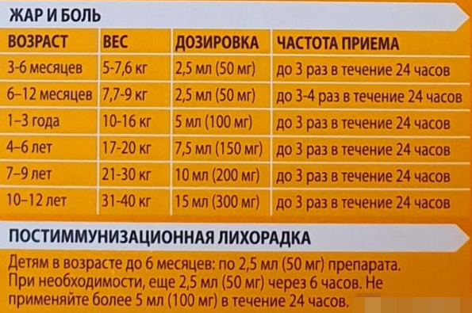
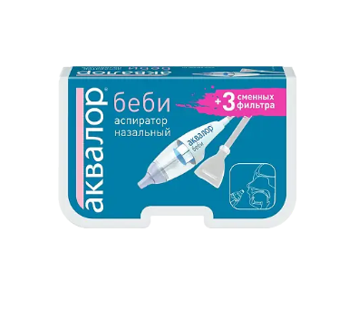
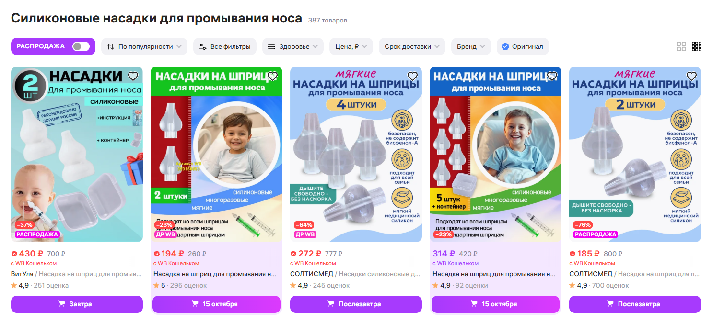
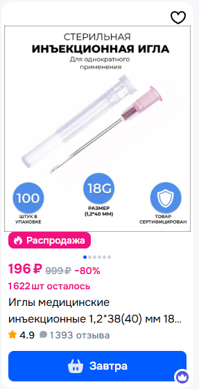
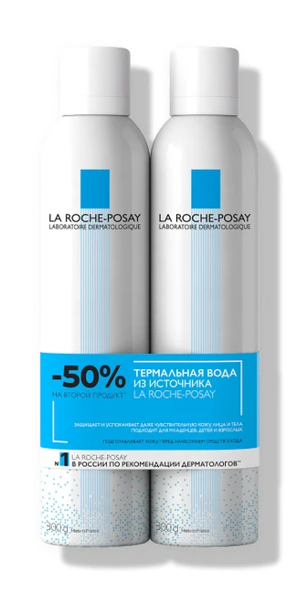
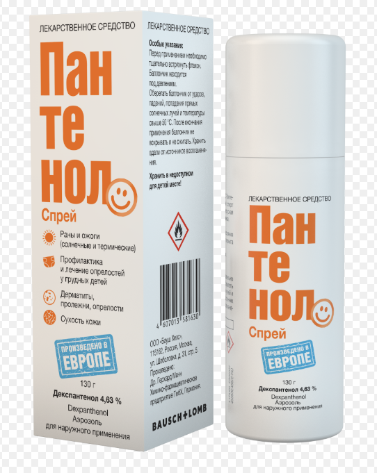
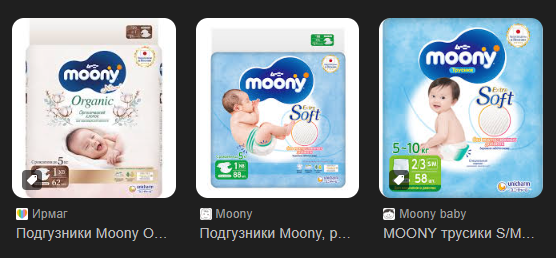
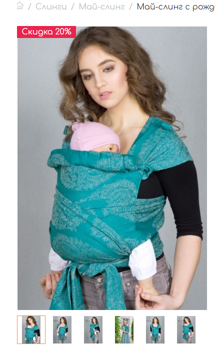

Привет!
Ща всё расскажу!
Там пониже список тем, жмякай какая понравится, страничка прокрутится к развёрнутой информации.

Чё у нас есть
- ✓ Простуда и сопли
- ✓ Подгузники и уход за попой
- ✓ Облегчение жизни: слинг и шезлонг
- Кормление и молоко
- ✓ Прививки
- Контакты хороших врачей
- Какашки
- Просто орёт, колики, фиолетовый плач
- ✓ Идиотские назначения и как проверять
- Что маме можно и чего нельзя
- Что делать в роддоме и коробка Собянина
- А если в реанимацию?
- Сон, режим дня, белый шум и мелатониновые циклы (спи, малыш)
- Скачки роста, новые умелки и приложения wonder weeks и kinedu
Быстрые вопросы:
Чё класть в небулайзер
Ответ 1
Дозировка нурофена
Вес ребёнка делим пополам, это получится количество сиропа Нурофен. Пример: вес 6 кг - сиропа 3 мл
Между приёмами нурофена строго 8 часов! Если не превышать дозировку, можно пить его длительно, хоть две недели. Его можно пить не только от жара, но и от боли, например, когда режутся зубы.
На упаковке пишут так, но это МИНИМАЛЬНАЯ доза, можно добавить до дозы в половину веса если не действует (а можно просто сразу нормальную дать и не париться):
Таблица прививок
Проверка лекарств
Контакты врачей
Ответ 1
Простуда и сопли 🔼
С появлением младенца в доме появляется “сопливая аптечка”: физраствор (натрия хлорид 0,9%), називин (детский!), соплеотсос (лучше всего обычный), шприцы 20мл, силиконовые насадки к ним.
Физраствор лучше всего купить в буфусах (пластиковые капсулы для без-игольного забора препарата). Он ещё бывает в больших бутылях, но их нельзя долго держать вскрытыми.
Називин бывает трёх возрастов: 0-1 год, 1-6 лет и c 6 для взрослых, даём строго по возрасту и не более трёх раз в день, им можно передознуться!
Соплеотсос (аспиратор): у аквалора есть набор: три насадки с фильтрами и собственно трубочка. Можно взять любой другой какой понравится, принцип действия там один и тот же. Чтобы не тратить деньги каждый раз на насадки (их ещё и не найдёшь) можно на озоне купить готовые одноразовые фильтры, а насадки кипятить в футляре от соски в микроволновке.
Чистим нос в три приёма: высасываем немножко, брызгаем називин, ждём 10-15 минут, высасываем всё что осталось. Когда постарше станет ребёнок - вместо высасывания делаем промывание физраствором, очень хорошо помогает и увлажняет нос заодно.
Промывание физраствором: примерно с года можно его добавить. ребёнка ставим стоя (над ванной или в ванной), в шприц 20 мл физраствора, надеваем силиконовую насадку и вливаем 20 мл в одну ноздрю. Из другой выскочат все сопли прямо комками. Повторяем для второй ноздри. После процедуры шприц и насадку в тот же футляр от соски и кипятим в микроволновке.
Если сопли уже постоянно, то берём уже большую бутыль физраствора и иглу для катетера (розовую), чтобы набирать раствор. Обычной иглой такой объём будет набираться долго и с трудом.
ОРВИ
Как говорил мне лор - пока сопли и кашель не мешают спать, это не моя проблема. В норме ребёнок может немного сопливить и долго кашлять (для кашля нормально проходить две недели). Это не повод кутать, не купать, избегать общественных мест или родственников.
Красные флаги: температура, вялость, хрипы в лёгких (слушает врач), красное опухшее горло или налёт на горле/миндалинах, сыпь, лающий кашель (с обычным не перепутаешь).
Но если волнуешься - зови скорую/иди к врачу, твоё спокойствие дороже всего!
В целом, детки очень выносливые и если это не мощная зараза, то они хорошо и быстро выздоравливают.
Всегда смотрим на самочувствие - если сопли рекой, а ребёнок скачет и весёлый (даже если нет аппетита), значит ничего серьёзного. Если температура ниже 38,5 и ребёнок не лежит тряпочкой, её можно не сбивать.
Вообще для ОРВИ лечение симптоматическое - лечим нос, горло, сбиваем по надобности температуру и всё. Не надо ничего из раздела идиотских назначений. Главное побольше пить, хорошо проветривать и вкусно питаться. Если надо сбить температуру - дозировка сиропа нурофена = вес ребёнка пополам, на возраст не смотрим. Весит 6кг, значит даём 3 мл. А вот на парацетамол часто бывает аллергия, без необходимости его лучше не давать. Плюс при некоторых болезнях типа ВЭБ его давать вообще нельзя, так как он гепатотоксичен. Но иногда одного нурофена недостаточно и поэтому пусть парацетамол тоже будет на случай долгой трудносбиваемой температуры, их можно чередовать через 6 часов, а один нурофен только через 8.
НЕ ОРВИ
- У вас точно будет розеола (три дня жёсткой температуры без других симптомов, а потом температура уйдёт и появится сыпь), лечение тоже симптоматическое, это один из герпес-вирусов, тут другого лечения нет.
- Мононуклеоз, ВЭБ и другие герпес-вирусы - тоже температура, и легко присоединяется бактериальная ангина, тут уже будут антибиотики по назначению врача.
- Стенозирующий ларинготрахеит (лающий кашель) - часто бывает у детишек особенно ночью, тут уже ингаляции с пульмикортом или (неофициальный и неприятный метод, но рабочий если ничего под рукой нет) можно открыть ампулу дексаметазона и вылить прямо в рот (он горький!). Это стероид, он сразу уберёт отёк. В первый эпизод такой фигни сразу вызывайте скорую, они должны исключить острое течение, и не раздумывая включайте небулайзер, если вдруг течение тяжёлое он поможет дотянуть до скорой. В небулайзер половинку пульмикорта и 2 мл физраствора.
- Коксаки (нога-рука-рот) - это сыпь пузырьками на ладонях, ступнях и во рту, очень неприятная, болезненная и очень заразная. Может быть с температурой. Тоже лечим только врачом.
- Кишечка: рвота, понос водой, может быть с температурой. Лечим отпаиванием и диетой, особое внимание на попу, она будет красная и болючая!
От остальных болезней вас должны защитить прививки, если всё сделано в срок.
Первые полгода малыша защищает мамин внутриутробный иммунитет, а потом немного иммунитета передаётся с молоком. Но болезни точно начнутся к этому времени. Главное не пугаться и действовать по протоколам.
Подгузники и уход за попой 🔼
Внезапно природа устроила так, что нежную кожу попы младенца разъедает его же собственная какашка. Поэтому гигиена очень важна. Но и психовать с этим особо не надо, достаточно мыть попу утром и вечером, водичкой с детской пенкой.
Если вдруг обкакались среди дня, можно протереть попу влажными салфетками, потом брызнуть термалкой чтобы смыть мыло от салфеток и вытереть насухо. Я покупала по скидону набор из двух больших бадеек термалки, это просто супер вещь! Она ещё и солёная, так что хорошо подсушит воспаления если вдруг что.
Если попа уже покраснела - можно намазать уже сухую и чистую ожоговым пантенолом (пенка). Нам не нужны жирные кремы под подгузник или присыпки, коже младенца это совсем не полезно, что бы ни утверждала реклама и бабушки.
Подгузники придётся подбирать, чтобы не оставляли красные следы от резинок, чтобы не протекали, чтобы не были мокрыми внутри. Для младенцев лучше подгузниками (легче менять), месяцев с шести можно уже на трусики переходить.
Нам не подошли ни премиум памперсы, ни хаггис, ни другие. Нам подошли японские moony, в совсем малышестве была хлопковая серия. Рекомендую на них не экономить, попу потом лечить дороже! Важно правильно подобрать размер, чтобы протечки не были катастрофическими. Выбираем по весу, а не по возрасту, и вес ребёнка должен быть по нижней границе диапазона подгузников. Пример: ребёнок весит 5 кг. Значит наш размер подгузов 5-10 кг. Если наш вес подходит под два размера подгузов, берём тот, у которого выше верхняя граница.
Облегчение жизни: слинг и шезлонг 🔼
Рассказываю о том, чем пользовалась сама. Есть ещё всякие другие штуки, но я от себя могу порекомендовать только эти две, остальное нам не зашло. Не секрет, что в первые месяцы малыш не захочет слезать с рук вообще. Это нормально, называется "четвёртый триместр", типа донашивание на себе. Чтоб к чёрту не отвалились руки, я советую купить вот такие штуки заранее и поучиться с ними работать.
Май-слинг - почему именно такой: обычный или с кольцами сложно намотать, ткань растягивается и болтается, нет поддержки головы. А эту штуку легко надеть с любой стороны, она держит голову, ребёнок в ней надёжно зафиксирован и отлично спит, ему супер комфортно и тепло зимой! Со старшим я про него не знала, а с младшим было просто супер! Надевать научишься за два раза без проблем.
Шезлонг - самый простой тоненький (чтоб легко стирать), но чтоб раскладывался почти в горизонталь, у нас был какой-то китайский аналог baby bjorn. Плюсы этой штуки в том, что её можно поставить на стол рядом пока готовишь, ребёнок тебя видит и не орёт, а руки свободны. Плюс эта штука слегка покачивается, и ребёнку комфортно переходить в сон при надобности. А когда станет постарше - будет кайфовать и скакать в ней, хихикая). Чем старше, тем в более высокое положение можно поставить.
Прививки🔼
Идиотские назначения и как проверять🔼
Врачи в поликлиниках ограничены в своих назначениях клиническими рекомендациями минздрава и “политикой” этой самой поликлиники. Назначения врачей нуждаются в проверке, даже если это хороший врач. Безопаснее думать, что все вокруг не шарят и разбираться самостоятельно. Вежливо киваем, обещаем всё сделать как написали и делаем по-своему.
Итак, что очень любят назначать малышам врачи:
- Фероны (виферон, интерферон, гриппферон и т.д.)
Это группа препаратов, которая призвана усилять иммунитет. Проблема в том, что усилить иммунитет лекарствами нельзя. Иммунитет укрепляется прогулками, проветриванием, хорошим питанием (кисломолочка, ферментированные продукты), хорошим сном и солнечным светом.
У малышей иммунитет априори незрелый, и чтобы он дозрел, ему надо встречаться с инфекциями, то есть ребёнок ДОЛЖЕН болеть. Много болезней в первый год это абсолютно нормально.
А если мы будем вмешиваться в работу иммунитета сторонними штуками (мы его не усиляем, мы его просто триггерим) то мы рискуем получить аутоимунное расстройство (аллергии, неадекватная реакция на прививки и т.д.). Поэтому что бы ни говорили врачи, фероны нам НЕ НУЖНЫ.
- Свечки в попу от всего
Жаропонижающие свечи легко заменить сиропом (исключение - кишечная инфекция, ребёнка сильно рвёт). А всё остальное как правило младенцам вообще не нужно. Это сразу повод насторожиться.
- “Натуральные” лекарства на травах
Они бесполезны и не работают. Чтобы выделить действующее вещество такой травы в той дозе, в которой оно начнёт работать, придётся потратить столько денег, что проще его тупо синтезировать. Такие назначения проще просто игнорировать. Лечимся лекарствами, а не бабушкиными средствами (сюда же ванночки из марганцовки, обтирания водкой и уксусом и прочая хрень с пищевыми продуктами и растениями).
- Сиропы от кашля, отхаркивающие
Никаких таких штук ребёнку нежного возраста давать нельзя! Средства для отхаркивания увеличивают объём мокроты в лёгких, а у младенцев дыхательная мускулатура не развита! Он просто не сможет её откашлять и только дольше будет выздоравливать. Всё что типа должно “смазать” больное горло смывается слюной за пару минут и подействует только в желудке. Поэтому сюда же все спреи типа Тантум-верде и так далее.
- Гели для облегчения боли при прорезывании зубов
Они не работают. Боль облегчают НПВС (например, Нурофен), а гель так же легко смывается слюной за минуту и ничего не облегчает.
- Ингаляции с физраствором или чем-то ещё, не предназначенным для небулайзера (масла, сиропы)
Как говорят врачи, если подышать физраствором, это смачивает слизистую и облегчает кашель и сопли. Физраствор это просто солёная водичка, которая может что-то смягчить и увлажнить, только пока ей дышишь, то есть ровно на минуту. Чтобы смочить слизистую - провертиваем почаще, гуляем на улице и ставим дома увлажнитель. Ну и разумеется, боремся с соплями. А масла и сиропы в небулайзер вообще нельзя. Туда можно только Будесонид (на нём написано “раствор для ингаляций”) и Пульмикорт (аналогично). Больше ничего лить в небулайзер не надо.
- Препараты коллоидного серебра в виде капель в нос (Протаргол, Сиалор и т.д.)
Не обладают доказанной эффективностью в борьбе с соплями или аденоидами. Все будут рассказывать как оно хорошо помогает, но это не более чем совпадения, увы.
- Глазные капли в нос или в уши
Ничего не предназначенного для носа в нос капать нельзя! Ни свекольный сок, ни глазные капли, ни оксолиновую мазь, ни все эти штуки, которые будут советовать все бабушки, знакомые и т.д. Только капли в нос! Називин, Авамис, Назонекс и ещё пара штук, и все их выписывает врач.
- Аспирин
Надеюсь его не назначат, потому что это абсолютно некомпетентно. Аспирин гепатотоксичен и его давать детям нельзя! Единственное исключение - сильная, несбиваемая температура и только тогда его в составе литической смеси может уколоть только СКОРАЯ.
Как проверять назначения:
- Список фуфломицинов
- e-lactancia.org (именно зарубежный). Если препарата (или действующего вещества) там нет, с большой долей вероятности это несертифицированное нигде кроме России барахло. Например, очень любимый на постсоветской территории Дротаверин (Но-шпа). Он действует, но побочек у него столько, что за рубежом давно перешли на тот же Спазган.
- Проконсультироваться с нормальным проверенным врачом и если не удовлетворит, получить ещё одно мнение другого врача.